[10-4] I2C通信外设 — 学习笔记
- 本集定位：这是模块 10 的理论课——讲 STM32 内部的 I2C 硬件外设，并精读《STM32F10xxx 参考手册》第 24 章。片头回顾上一集的软件 I2C（GPIO 模拟）并明确「程序现象和上一集一样，这里就不演示了」；本集没有写一行代码，也几乎没出现库函数名（只在口述里提了一句
I2C_Cmd）。结尾 44:55「本小节的内容就全部结束了」，最后一句「硬件 I2C 的代码部分，那我们下一节」——代码在 [10-5]。
一句话结论
先搞清楚软件 I2C 与硬件 I2C 的关系：I2C 是同步时序，对每一位的持续时间要求不严格（可以长点短点、甚至中途暂停），所以用 GPIO 手动拉低/释放时钟线来模拟非常常见、也非常灵活；但串口那种异步时序对时间要求严格、软件模拟很难，所以基本都用硬件外设。硬件 I2C 的好处是执行效率高、节省软件资源、时序波形规整、通信速率快——简单应用用软件 I2C，性能要求高用硬件 I2C。STM32 内部集成了硬件 I2C 收发电路，由硬件自动执行时钟生成、起始/终止条件生成、应答位收发、数据收发，大大减轻 CPU 负担；我们要做的只是写控制寄存器 CR、数据寄存器 DR、读状态寄存器 SR（比喻：CR 是油门刹车方向盘、SR 是仪表盘），有了库函数更简单。功能：支持多主机模型、7 位/10 位地址模式、标准速度（高达 100kHz）/快速（高达 400kHz）、DMA、兼容 SMBus 协议；STM32F103C8T6 的硬件 I2C 资源＝I2C1、I2C2（硬件资源受电路限制只有 2 路，软件 I2C 想开几路开几路）。多主机模型分固定多主机（总线上固定几个主机，两个同时说话＝总线冲突→仲裁）和可变多主机（谁要发数据谁「跳出来」当主机）——STM32 按可变多主机设计，实际没人跟它抢。地址模式：7 位地址（128 种）+ 读写位；10 位地址（1024 种）的思路是起始后两个字节都作寻址——第一字节前 5 位固定 11110 作标志位（这个组合在 7 位模式下不会出现），剩下 2 位 + 第二字节 8 位 = 10 位。框图（图242）：SDA/SCL 引脚（SMBALERT 是 SMBus 用、I2C 用不到）→ 数据控制 + 数据移位寄存器 + DATA REGISTER；比较器 + 自身地址寄存器/双地址寄存器（从机模式用，可同时响应两个地址）、PEC 计算器/寄存器（CRC 校验）；时钟控制寄存器 CCR；控制寄存器 CR1&CR2、状态寄存器 SR1&SR2 → 控制逻辑电路；输出 中断 与 DMA 请求与响应。引脚映射（查引脚定义表「复用功能」栏）：I2C1：PB6=SCL、PB7=SDA，且可重映射到 PB8/PB9；I2C2：PB10=SCL、PB11=SDA——硬件 I2C 引脚是固定连接好的，不能像软件 I2C 那样任意指定；GPIO 要配成复用开漏输出（图17 里 P-MOS 上管没有，只能拉低或释放）。数据收发是「DR + 移位寄存器」两级：发送时写 DR → 转入移位寄存器逐位输出（TxE 发送寄存器空）；接收时移入移位寄存器 → 整体转到 DR（RxNE 接收寄存器非空）——与串口结构类似；I2C 高位先行，所以简化图里移位寄存器是「向左移」。主机发送流程（图245）：初始化后总线空闲、STM32 默认从模式 → 写 CR1 的 START=1（硬件自动产生起始、转主模式）→ EV5（SB=1，读 SR1 后写地址到 DR 清除）→ 硬件发「地址+写」→ 从机应答 → EV6（ADDR=1，读 SR1 再读 SR2 清除）→ EV8_1（TxE=1 且移位寄存器空）→ 写数据到 DR → EV8（TxE=1、移位寄存器非空，写入 DR 清除）→ 逐字节重复 → 最后 EV8_2（TxE=1 且 BTF=1）→ 写 CR1 STOP=1 产生停止条件。主机接收流程（图246）：START → EV5 → 写「地址+读」→ EV6 → 清 ADDR 后进入接收 → EV7（RxNE=1，读 DR 清除）循环 → 不再接收时提前把 ACK 置 0 并设置 STOP 请求 → EV7_1（RxNE=1 且 ACK=0）→ 停止；只收 1 个字节时用 EV6_1（没有对应事件标志）。EV 事件本质是若干标志位的组合，按正常流程读寄存器会自动清标志，不用手动清。软件/硬件波形对比：数据一致，但硬件 I2C 波形更规整、SDA 变化紧贴 SCL 下降沿（可理解为「SCL 下降沿写、上升沿读」）；软件模拟因 Delay 不准导致周期不均——因为 I2C 是同步时序，这些「不标准」波形照样能正常通信。手册第 24 章：24.3.1 模式选择＝4 种模式（从发送器/从接收器/主发送器/主接收器，默认从模式，产生起始条件后自动转主模式，仲裁丢失或产生停止信号后转回从模式）；主模式操作顺序：CR2 设 FREQ（输入时钟）→ 配时钟控制寄存器 → 配上升时间寄存器 → CR1 启动外设 → START=1，且输入时钟标准模式 ≥2MHz、快速模式 ≥4MHz；寄存器：CR1/CR2/OAR1/OAR2/DR/SR1/SR2/CCR/TRISE（有库函数，CCR/TRISE 的公式不用自己算，本集只举例 FREQR=08 时 100kHz 需 CCR=0x28＝40×125ns=5000ns；TRISE 偏移 0x20、复位 0x0002）。
0. 本集定位：理论课（STM32 I2C 外设原理 + 手册精读），代码在 10-5
- 本集是纯理论课：全程 PPT + 参考手册第 24 章截图；片头明确「程序现象和上一集一样，这里就不演示了」；没有写一行代码。
- 本集几乎不出现库函数名：只在口述里提了一句
I2C_Cmd（使能外设）；I2C_Init/I2C_SendData/I2C_GetFlagStatus等均未出现——笔记不提前写这些函数名，写法等 [10-5]。 - 本集的重点：「主机发送/主机接收」两个流程图 + 事件编号（EV5/EV6/EV8_1/EV8/EV8_2/EV7/EV7_1/EV6_1/EV9），以及寄存器 CR/DR/SR 的角色；从机模式、PEC、SMBus、双地址寄存器、10 位地址都只要求「了解」。
- 片尾 44:55「本节内容全部结束」，下一节讲硬件 I2C 的代码部分（[10-5]）。
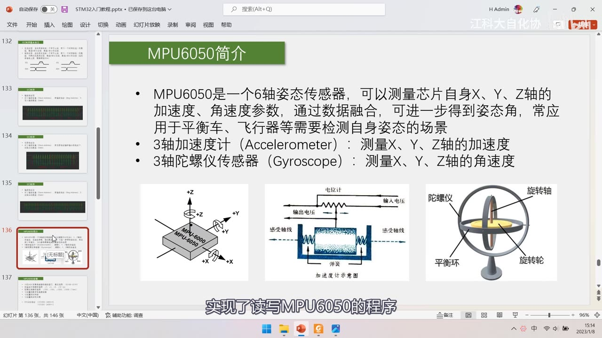
图 1：开场承接上一集——PPT「MPU6050简介」页（6 轴姿态传感器、3 轴加速度计 + 3 轴陀螺仪、加速度计/陀螺仪机械模型图）；字幕「实现了读写MPU6050的程序」
1. 软件 I2C 与硬件 I2C
- 软件 I2C：就是用 GPIO 手动拉低/释放时钟线去凑时序；因为 I2C 是同步时序，每一位的持续时间要求不严格（长点、短点、中途暂停，影响都不大），所以软件模拟 I2C 非常常见；
- 对比串口：串口是异步时序，每一位的时间要求很严格（不能过长也不能过短），软件模拟很困难，所以串口实现基本都倒向硬件外设；
- 硬件 I2C 的意义：执行效率高、节省软件资源、时序波形规整、通信速率快——所以硬件 I2C 有它的应用场景；
- 选择建议：简单应用 → 用灵活的软件 I2C；性能指标要求高 → 用硬件 I2C。
- 本集不演示现象（与上一集软件 I2C 的现象一样）。
2. I2C 外设简介
- STM32 内部集成了硬件 I2C 收发电路（I2C 通信的硬件收发器）：由硬件自动执行时钟生成、起始/终止条件生成、应答位收发、数据收发等功能——硬件电路自动翻转引脚电平，我们只需要写控制寄存器 CR 和数据寄存器 DR、再读状态寄存器 SR 监控时序状态；
- 通俗比喻：写 CR 像踩油门/刹车/方向盘——控制汽车运行；读 SR 像看仪表盘——了解汽车运行状态；有了库函数封装，给个参数就能配置/读取，更简单；
- 意义：减轻 CPU 负担、节省软件资源，而且硬件生成时序的性能效率更高。
功能列表：
| 功能 | 说明 |
|---|---|
| 多主机模型 | 支持固定多主机/可变多主机（STM32 按可变多主机设计） |
| 7 位 / 10 位地址模式 | 两种寻址方式 |
| 标准 / 快速速度 | 标准速度高达 100kHz、快速高达 400kHz（协议规定的上限） |
| DMA | 多字节收发时用 DMA 自动转运数据，提高效率（几个字节就没必要） |
| 兼容 SMBus | 电源管理系统协议，与 I2C 很像，STM32 顺便兼容（本课程主要学 I2C） |
- 资源：STM32F103C8T6 的硬件 I2C 资源＝I2C1、I2C2（两个独立外设）；
- 硬件 vs 软件的资源差异：硬件 I2C 受电路限制，本型号最多 2 路；软件 I2C 只需复制代码，想开几路开几路（只要代码存得下）。
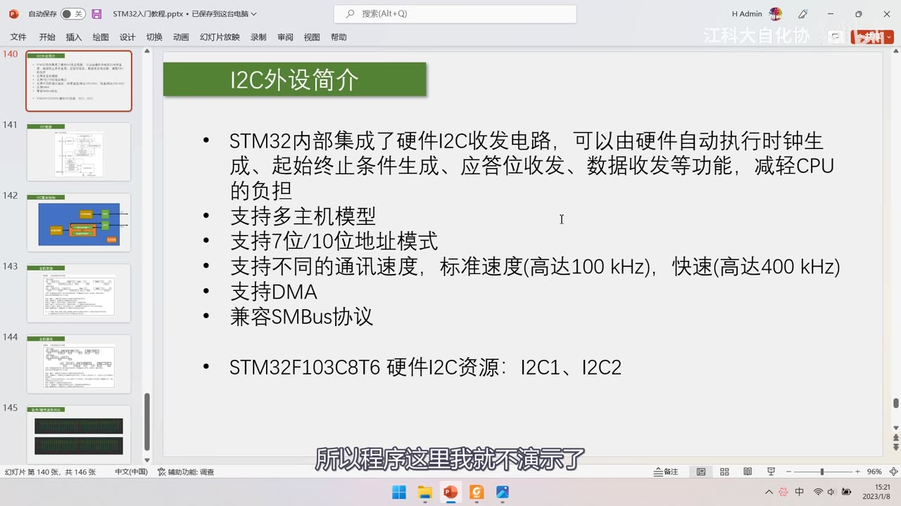
图 2：PPT「I2C外设简介」——STM32 内部集成硬件 I2C 收发电路，可由硬件自动执行时钟生成、起始终止条件生成、应答位收发、数据收发，减轻 CPU 负担；支持多主机模型；支持 7 位/10 位地址模式；支持不同通讯速度，标准速度（高达 100kHz）、快速（高达 400kHz）；支持 DMA；兼容 SMBus 协议；STM32F103C8T6 硬件 I2C 资源：I2C1、I2C2；字幕「所以程序这里我就不演示了」
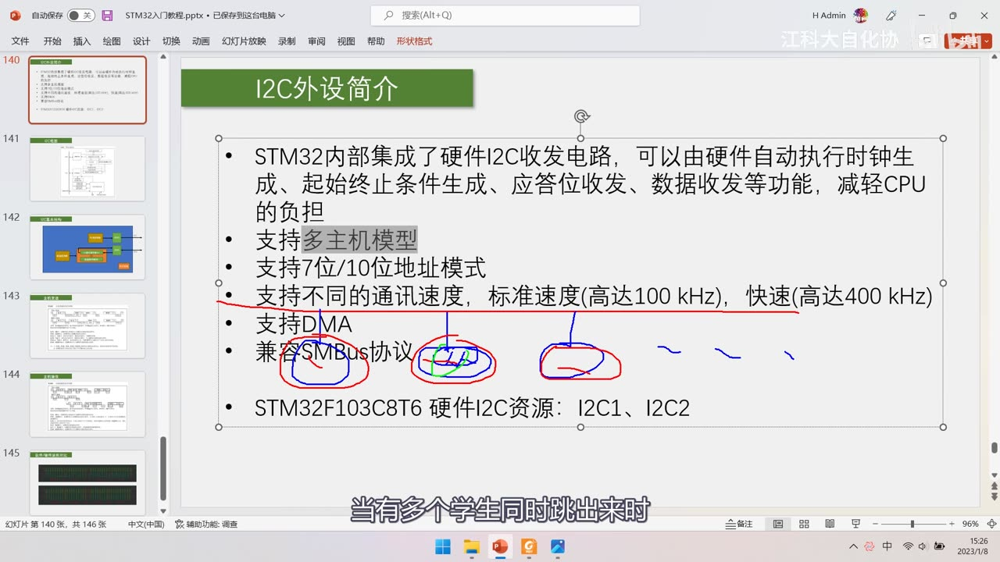
图 3：同一页上的红/蓝笔标注——圈出「多主机模型」「7位/10位地址模式」「SMBus」「DMA」等条目，并在「100kHz / 400kHz」上画线；字幕「当有多个学生同时跳出来时」（讲多主机仲裁的比喻）
3. 多主机模型与地址模式
3.1 多主机模型
- 固定多主机：总线上有两个或更多固定的主机（始终固定为主机），其余固定为从机；两个主机同时想说话 → 总线冲突 → 总线仲裁，失败方让出总线控制权；
- 可变多主机：总线上没有固定的主机，任何设备谁要发数据谁就「跳出来」当主机，通信完成后再退回从机位置；多个同时跳出来 → 总线冲突 → 仲裁；
- STM32 的 I2C 按可变多主机模型设计——虽然实际没人跟它争主机，但程序操作仍要按「谁要做主机谁跳出来」的思路来。
3.2 7 位与 10 位地址模式
- 7 位地址：起始条件之后第一字节＝7 位地址 + 读写位；7 位地址共 128 种——最简单最常见；如果一条总线要挂 128 个以上设备就不够用（还有「不同厂商地址冲突」问题，可改低位地址或开辟多条 I2C 总线来解决）；
- 10 位地址（1024 种）思路：既然一字节只能放 7 位，那就让起始之后的两个字节都作寻址——第一字节有 7 个空位、第二字节 8 个空位，共 15 位，但 I2C 的 10 位模式只取其中 10 位，多出来的 5 位当标志位用（否则从机无法判断「后面那个字节还是不是寻址」）：
- 第一字节前 5 位固定为
11110作为10 位寻址模式的标志位； - 前 5 位不是
11110就说明是 7 位寻址模式； - 第一字节剩下的 2 位 + 第二字节 8 位 = 10 位地址；
11110开头的组合在 7 位地址模式中不会出现，所以不会混淆；
- 第一字节前 5 位固定为
- 本课程只要求掌握 7 位地址，10 位「了解即可」。
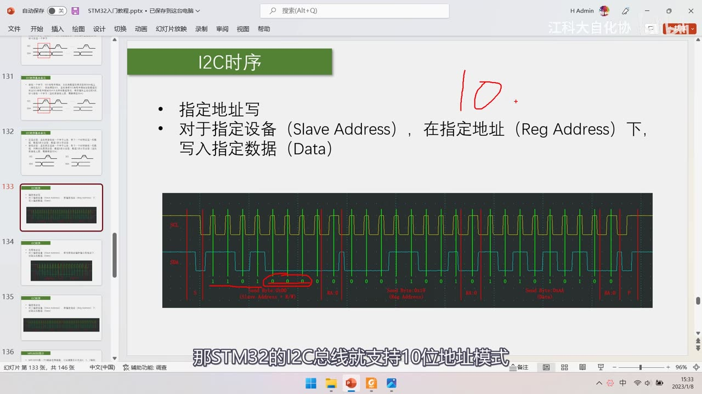
图 4：PPT「I2C时序」指定地址写页（上集内容）+ 右上角红笔写的「10」——讲 STM32 的 I2C 也支持 10 位地址模式；下方是上集的实测波形（Send Byte 0xD0、0x19、0xAA、RA 0、P）；字幕「那STM32的I2C总线就支持10位地址模式」
4. I2C 框图（图242）
- 左侧引脚：SDA、SCL（I2C 通信两个引脚），还有 SMBALERT（SMBus 用的中断信号线，I2C 用不到）；
- 数据通路：SDA ↔ 数据控制 ↔ 数据移位寄存器 ↔ DATA REGISTER（数据寄存器 DR）；
- 从机相关（了解）：比较器 + 自身地址寄存器 / 双地址寄存器——STM32 作为从机时，收到的寻址地址经比较器判断，与自身地址相同就响应；STM32 支持同时响应两个从机地址（双地址寄存器）；
- PEC：错帧校验（PEC）计算 + PEC 寄存器——硬件 CRC 校验（本课程不用，了解）；
- 时钟：SCL ↔ 时钟控制 ↔ 时钟控制寄存器（CCR）——确定 SCL 时钟频率与占空比；
- 寄存器与控制：控制寄存器（CR1&CR2）、状态寄存器（SR1&SR2） → 控制逻辑电路（黑盒）→ 中断、DMA 请求与响应；
- 主机发送/接收时真正要关注的：数据寄存器 DR + 数据移位寄存器这一段，以及 CR（控制）与 SR（状态）。
4.1 数据收发：DR + 移位寄存器两级
- 发送：字节写到 DR，当移位寄存器没有数据在移位时，DR 的值转入移位寄存器，逐位输出到 SDA；移位过程中可以往 DR 写下一个字节，移位完成就能无缝衔接——数据由 DR 转到移位寄存器时置
TxE（发送寄存器空）； - 接收：从 SDA 逐位移入移位寄存器，移完一个字节后整体转到 DR——置
RxNE（接收寄存器非空）； - 与串口的结构类似（串口也是 DR + 移位寄存器两级）。
4.2 简化基本结构
把图 242 中本课程用不到的部分（比较器/自身地址/双地址/PEC/SMBALERT）去掉，就得到简化结构：
- 时钟控制器 → GPIO → SCL（一主多从模型下时钟只画输出方向）；
- 数据控制器 + 数据寄存器 DR ↔ 移位寄存器 → GPIO（双向）→ SDA；
- 右下「开关控制」=
I2C_Cmd使能外设； - 移位寄存器「向左移位」：因为 I2C 是高位先行，发送时最高位移出、然后次高位……一个 SCL 时钟移一位，就把数据由高位到低位依次放到 SDA 上；
- GPIO 必须用「复用开漏输出」：看图 17 复用功能配置——输出驱动器的 P-MOS 上管不存在（只有 N-MOS），输出低电平＝拉低、输出高电平＝释放浮空；输入部分仍经 TTL 肖特基触发器读回，所以「开漏」同时能当输入用；外设的输出接在「复用功能输出」、输入接在「复用功能输入」。
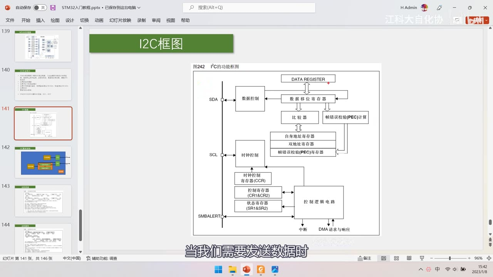
图 5：PPT「I2C框图」——图242 I²C 的功能框图：左侧 SDA/SCL/SMBALERT；数据控制 ↔ 数据移位寄存器 ↔ DATA REGISTER；数据移位寄存器 ↔ 比较器 ↔ 自身地址寄存器/双地址寄存器；错帧校验(PEC)计算/寄存器；SCL ↔ 时钟控制 ↔ 时钟控制寄存器(CCR)；控制寄存器(CR1&CR2)、状态寄存器(SR1&SR2) → 控制逻辑电路 → 中断、DMA 请求与响应；字幕「当我们需要发送数据时」
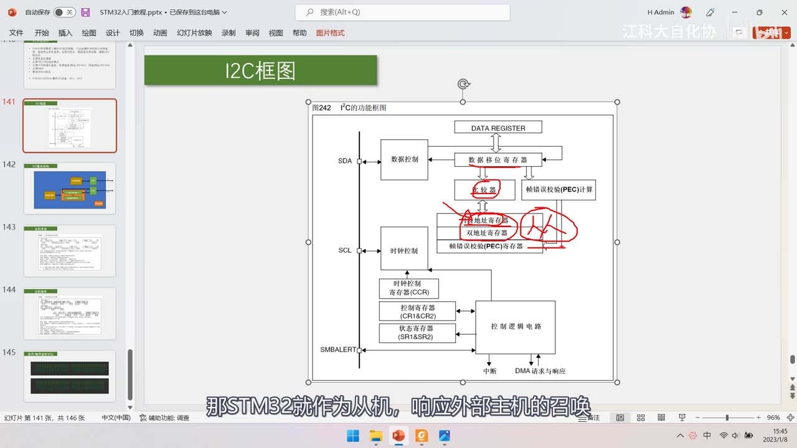
图 6：同一框图上的红笔——圈住「比较器」「自身地址寄存器/双地址寄存器」「错帧校验(PEC)计算」，并画箭头连到控制逻辑；字幕「那STM32就作为从机，响应外部主机的召唤」
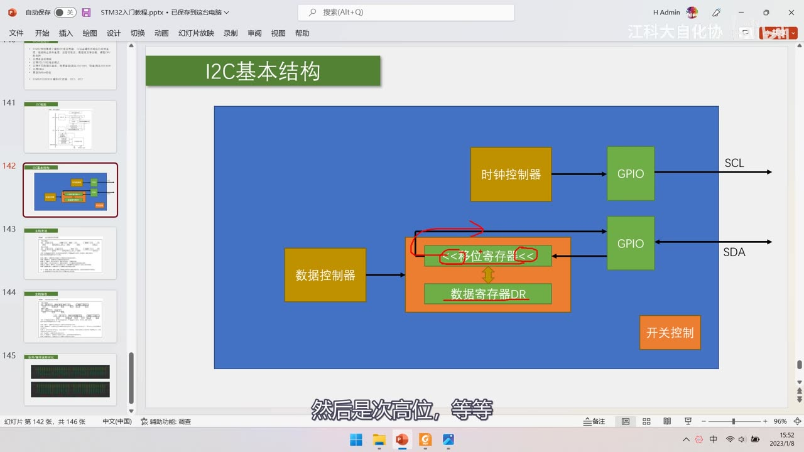
图 7：PPT「I2C基本结构」——左侧「数据控制器」与右侧「时钟控制器」；中间 <<移位寄存器<<（红圈红箭头）与下方「数据寄存器DR」双向；时钟控制器 → GPIO → SCL（输出），移位寄存器 ↔ GPIO（双向）→ SDA；右下「开关控制」；字幕「然后是次高位，等等」
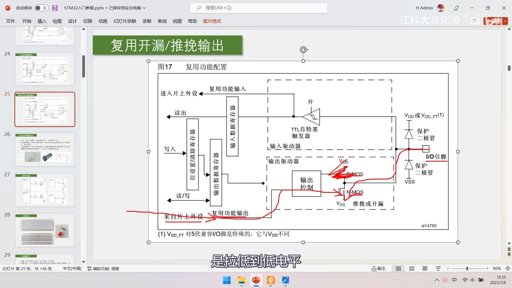
图 8：PPT「复用开漏/推挽输出」——图17 复用功能配置：进入片上外设的「复用功能输入/复用功能输出」、读出/写入、位设置清除寄存器、输入/输出数据寄存器、TTL 肖特基触发器、输入驱动器、输出驱动器（P-MOS 被红笔划掉、只剩 N-MOS）、保护二极管、I/O 引脚、VDD/VSS；字幕「是拉低到低电平」
5. 引脚映射
查引脚定义表的「复用功能」栏：
| 外设 | SCL | SDA | 备注 |
|---|---|---|---|
| I2C1 | PB6 | PB7 | 可重映射到 PB8/PB9 |
| I2C2 | PB10 | PB11 | 无重映射 |
- 硬件 I2C 的引脚在芯片内部已经连接好，所以只能使用指定引脚，不能像软件 I2C 那样任意指定——硬件 I2C 对引脚限制较大；
- 与上一集的对应关系：上一集软件 I2C 用的是 PB10/PB11，正好就是 I2C2 的 SCL/SDA——如果改用硬件 I2C2，接线可以完全不变；若要改用 I2C1 则要接到 PB6/PB7。
6. 主机发送流程（手册图245）
前提：初始化后总线空闲、STM32 默认处于从模式。
- 写 CR1 的
START = 1：硬件自动产生起始条件，并从从模式切换到主模式（多主机模型下「STM32 有数据要发，就跳出来当主机」）； - 等待
EV5事件：SB = 1（起始条件已发送），读 SR1 后把从机地址写入 DR 即可清除该事件； - 硬件自动把「地址 + 写」发送到总线上，然后从机应答（没有应答则硬件置应答失败的标志位）；
- 等待
EV6事件：ADDR = 1（主模式下表示地址发送结束），读 SR1 再读 SR2 清除； EV8_1：TxE = 1且移位寄存器空、DR 空——表示可以写数据了；- 把第一个数据写入 DR → 硬件转入移位寄存器发送 → 状态变成移位寄存器非空，即
EV8（TxE = 1、移位寄存器非空、DR 空，写入 DR 清除该事件）； - 逐字节重复：写 DR → EV8 消失 → 数据移位完成 → 又产生 EV8……
- 数据全部写完后，最后一个字节移位完成 →
EV8_2：TxE = 1且BTF = 1（DR 空、移位寄存器也空，代表「不想再发了」）→ 写 CR1 的STOP = 1产生停止条件（硬件在当前字节传输完成后产生）。
EV 事件的本质：把一个或多个标志位组合起来叫「EVx 事件」；按正常流程读写对应寄存器会自动清除标志，不需要手动清。
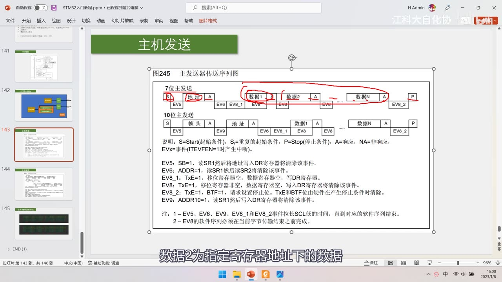
图 9：手册图245「主发送器传送序列图」——7 位主发送：S→地址 A→数据1 A→数据2 A→…→数据N A→P，下方 EV5、EV6、EV8_1、EV8、EV8、EV8_2；10 位主发送：S→帧头 A→地址 A→数据1 A→…→P，EV5、EV9、EV6、EV8_1…；说明：S=Start、Sr=重复起始、P=Stop、A=响应、NA=非响应、EVx=事件（ITEVFEN=1 时产生中断）；EV5：SB=1，读 SR1 后将地址写入 DR 清除；EV6：ADDR=1，读 SR1 再读 SR2；EV8_1：TxE=1，移位寄存器空，数据寄存器空，写 DR；EV8：TxE=1，移位寄存器非空，数据寄存器空，写入 DR 清除；EV8_2：TxE=1、BTF=1，请求设置停止位，TxE 与 BTF 由硬件在产生停止条件时清除；EV9：ADDR10=1；注：EV5/EV6/EV9/EV8_1/EV8_2 会拉长 SCL 低电平时间、EV8 的软件序列必须在本字节传输结束之前完成；字幕「数据2为指定寄存器地址下的数据」
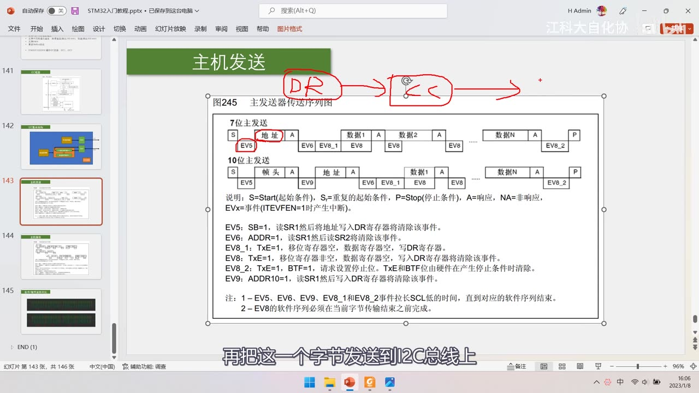
图 10：同一页上的红笔——写「DR → <<」并画箭头：把要发送的字节写入 DR，硬件再把它送到移位寄存器、逐位发到 I2C 总线上；字幕「再把这一个字节发送到I2C总线上」
7. 主机接收流程（手册图246）
- 写 CR1
START = 1→ 等待 EV5（SB = 1）； - 写「地址 + 读」到 DR → 硬件发地址 → 等待 EV6（
ADDR = 1，读 SR1 再读 SR2 清除）； - 清 ADDR 后自动进入接收数据阶段 → 每次收到一字节产生
EV7（RxNE = 1，读 DR 清除）； - 读 DR 拿走数据 → EV7 消失 → 下一个字节移入移位寄存器 → 再产生 EV7……循环；
- 当不想再接收时（最后一个字节移位时）：提前把 CR1 的
ACK置 0（非应答），并设置 STOP 请求； - 最后一个字节接收完成 →
EV7_1（RxNE = 1且ACK = 0）→ 之后由硬件产生停止条件； - 只接收 1 个字节时用
EV6_1：它没有对应的事件标志，只适合接收 1 个字节的情况——恰好在 EV6 之后（清 ADDR 之后），要清除响应和停止条件的产生位。
注意：图246 里的「7 位主接收」时序是当前地址读的形式（
S→地址+读→数据…）；如果要实现指定地址读，需要把「指定地址写（不发数据）」和「读」组合起来（重复起始），这正是上一集软件 I2C 的复合格式，本集只讲外设的流程、具体组合在 [10-5] 的代码里。
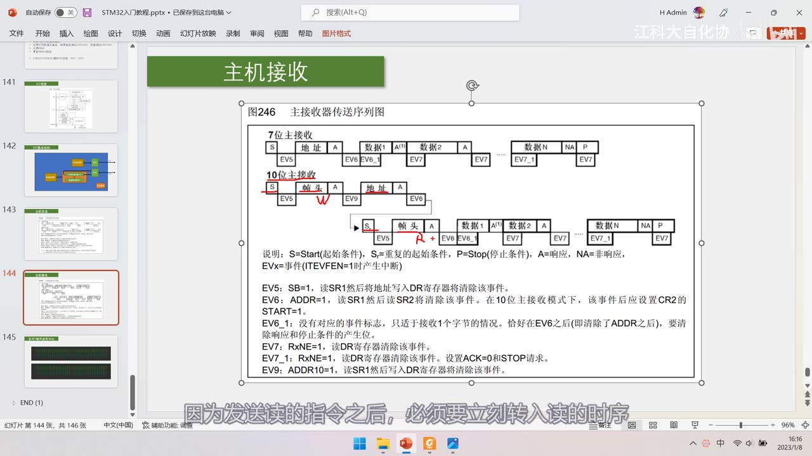
图 11：手册图246「主接收器传送序列图」——7 位主接收：S→地址 A→数据1 A→数据2 A→…→数据N NA→P，下方 EV5、EV6、EV6_1、EV7、EV7、EV7_1、EV7；10 位主接收：S→帧头 A→地址 A→Sr→帧头 A→数据1 A→…；说明：EV5（SB=1）、EV6（ADDR=1，10 位主接收时该事件后应设 CR2 的 START=1）、EV6_1（没有对应事件标志，只适于接收 1 个字节）、EV7（RxNE=1，读 DR 清除）、EV7_1（RxNE=1，读 DR 清除，设置 ACK=0 和 STOP 请求）、EV9；字幕「因为发送读的指令之后，必须要立刻转入读的时序」
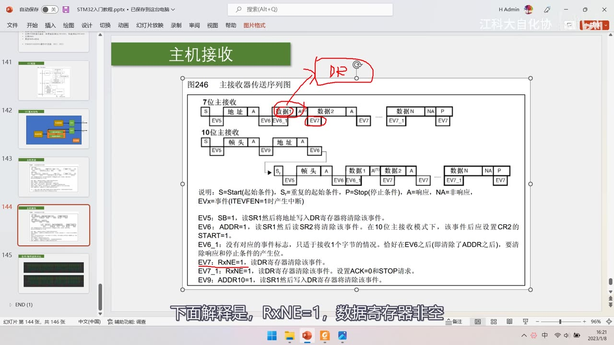
图 12：同一页上的红笔——写「DR」并用箭头指向「数据1」处（对应 EV7），红圈标出 EV6_1/数据1 区域；字幕「下面解释是，RxNE=1，数据寄存器非空」
8. 软件 / 硬件波形对比
- 上下两张波形：上面是软件 I2C、下面是硬件 I2C（都是指定地址读的时序），两种方式传的数据完全一样；
- 硬件 I2C 的波形更规整：SDA 的电平变化紧贴 SCL 的下降沿（可以理解为「SCL 下降沿写、上升沿读」），应答结束时也是「从机释放 SDA 的同时、主机立刻拉低 SDA」这种紧贴下降沿的动作；
- 软件模拟的波形不规整：
Delay加得有时多有时少，所以 SCL 周期不均、SDA 变化也不一定紧贴下降沿； - 但完全不影响通信——因为 I2C 是同步时序，只要在 SCL 高电平期间数据保持稳定就能被正确读取，这正是同步时序的好处（本段作为扩展了解）。
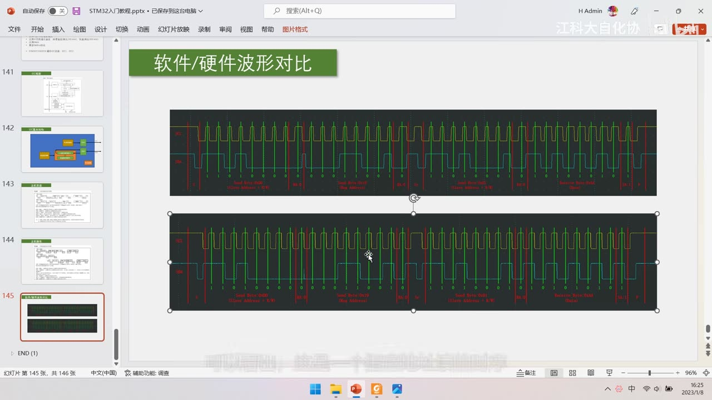
图 13：PPT「软件/硬件波形对比」——上半是软件 I2C 波形、下半是硬件 I2C 波形（都是指定地址读时序），两侧都标注了 Send Byte 0xD0、Send Byte 0x19、Send Byte 0xD1、RA 0、Receive Byte、P 等段落
9. 参考手册第 24 章要点
9.1 功能描述与 4 种模式
- 24.3 功能描述：I2C 模块接收和发送数据、串行/并行互相转换；通过 SDA（数据）+ SCL（时钟） 接总线；允许连接到标准（高达 100kHz）或快速（高达 400kHz）的 I2C 总线；支持中断/DMA；
- 24.3.1 模式选择——4 种模式：
- 从发送器模式、从接收器模式、主发送器模式、主接收器模式；
- 默认从模式；产生起始条件后自动从从模式切换到主模式；仲裁丢失或产生停止信号时，从主模式切换回从模式（支持多主机功能）。
9.2 主模式操作顺序与起始条件
- 操作顺序：① 在 CR2 中设定输入时钟 FREQ（以产生正确时序）② 配置时钟控制寄存器 ③ 配置上升时间寄存器 ④ 编程 CR1 启动外设 ⑤ 置 CR1 的 START=1 产生起始条件；
- 输入时钟要求：标准模式 ≥ 2MHz、快速模式 ≥ 4MHz（低于这个值不能保证时序正确）；
- 起始条件：BUSY = 0 时置 START = 1，接口产生开始条件并切换到主模式（M/SL 位置位）；SR1 的 SB 位被硬件置位（若 ITEVFEN 置位则产生中断）；随后主设备等待读 SR1，紧接着把地址写入 DR（即图245/246 的 EV5）；
- 注：主模式下再次设置 START 位，会在当前字节传输完成后由硬件产生一个重开始条件（Sr）。
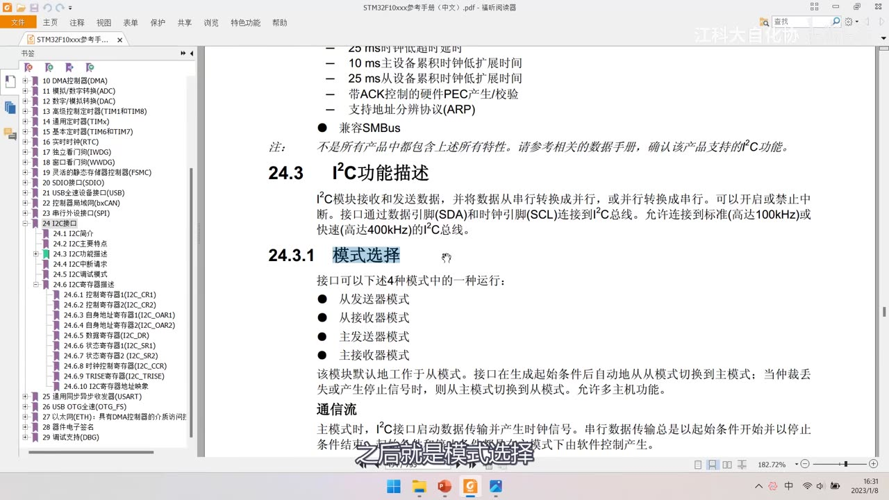
图 14：参考手册 24.3 功能描述与 24.3.1 模式选择——「接口可以下述 4 种模式中的一种运行：从发送器模式、从接收器模式、主发送器模式、主接收器模式」「该模块默认地工作于从模式。接口在生成起始条件后自动地从从模式切换到主模式；当仲裁丢失或产生停止信号时，则从主模式切换到从模式」；上方还有主要特点尾部（25ms 超时、带 ACK 控制的硬件 PEC、ARP、兼容 SMBus）；字幕「之后就是模式选择」
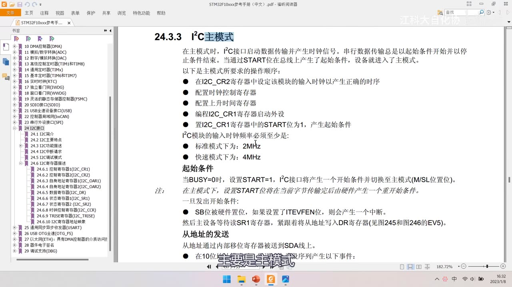
图 15：参考手册 24.3.3 I²C主模式——主模式下 I2C 启动数据传输并产生时钟；操作顺序：在 CR2 设定输入时钟 → 配置时钟控制寄存器 → 配置上升时间寄存器 → 编程 CR1 启动外设 → 置 CR1 的 START 位为 1 产生起始条件；I2C 模块输入时钟频率必须至少：标准模式 2MHz、快速模式 4MHz；起始条件：BUSY=0 时设 START=1，接口产生开始条件并切换到主模式；SB 位置位、等待读 SR1 后把地址写入 DR（图245/246 的 EV5）；从地址通过内部移位寄存器送到 SDA 线上
9.3 寄存器一览
| 寄存器 | 作用 | 关键位/说明 |
|---|---|---|
| CR1 | 控制寄存器 1 | PE（使能）、START、STOP、ACK、ENGC（广播呼叫使能）、ENPEC、POS、NOSTRETCH 等 |
| CR2 | 控制寄存器 2 | FREQ[5:0]（输入时钟频率）、ITBUFEN/ITEVTEN/ITERREN（中断使能）、DMAEN、LAST |
| OAR1 | 自身地址寄存器 1 | 从机模式下 STM32 自己的地址（本课程不用） |
| OAR2 | 自身地址寄存器 2 | 第二个从机地址（双地址，本课程不用） |
| DR | 数据寄存器 | 发送写这里、接收读这里（数据收发核心） |
| SR1 / SR2 | 状态寄存器 1/2 | 各种事件与错误标志（SB、ADDR、TxE、RxNE、BTF、AF 等） |
| CCR | 时钟控制寄存器 | SCL 时钟频率: 分频系数 + 占空比；例：FREQR=08 时 TPCLK1=125ns，产生 100kHz 需 CCR=0x28（40×125ns=5000ns） |
| TRISE | 上升时间寄存器 | 最大上升时间；偏移 0x20、复位值 0x0002（有库函数，公式不用记） |
- 有库函数时这些公式不需要自己算（
I2C_Init里给个时钟频率就行），本集只需了解寄存器结构和作用； - 单片机实验时用到的就是这些寄存器，写代码时（[10-5]）会按「配 CR2 时钟 → 配 CCR → CR1 使能 → START → 等 EV 事件 → 读写 DR」这条流程走。
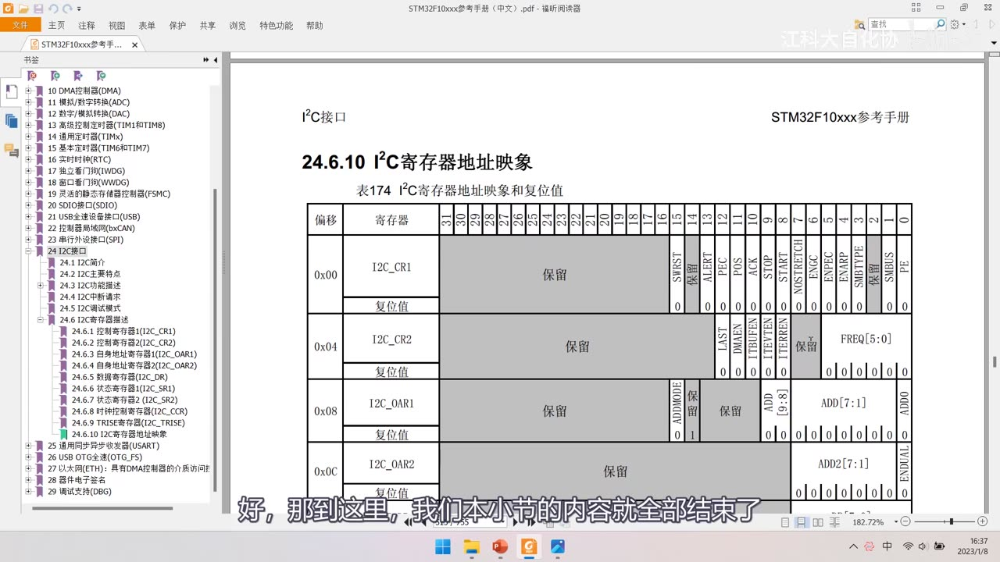
图 16：参考手册「24.6.10 I²C寄存器地址映像」表174——偏移 0x00 I2C_CR1（SMBUS、ALERT、PEC、POS、ACK、STOP、START、NOSTRETCH、ENGC、ENPEC、ENARP、SMBTYPE、PE 等位）、0x04 I2C_CR2（LAST、DMAEN、ITBUFEN、ITEVTEN、ITERREN、FREQ 的 5:0 位）、0x08 I2C_OAR1（ADDMODE、ADD 的 9:8 位、ADD 的 7:1 位、ADD0）、0x0C I2C_OAR2（ADD2 的 7:1 位、ENDUAL）；字幕「好，那到这里，我们本小节的内容就全部结束了」
坑与易错点
- 硬件 I2C 引脚固定：I2C1 = PB6/PB7（可重映射 PB8/PB9）、I2C2 = PB10/PB11，不能像软件 I2C 任意指定。
- GPIO 要配「复用开漏输出」：不是普通推挽；开漏下 P-MOS 不存在，输出高电平＝释放。
- STM32 默认从模式：写 START=1 才切到主模式；写完 STOP 又回到从模式。
- 主机发送必须按事件顺序：START → EV5 → 地址 → EV6 → EV8_1 → 写 DR → EV8 → … → EV8_2 → STOP；跳步会卡死。
- EV5/EV6 的清除方式不同：EV5 读 SR1 后写 DR 清除；EV6 要读 SR1 再读 SR2；EV8 写入 DR 清除。（按正常流程读写就会自动清，不要手动去「清标志」）
- EV8 的软件序列必须在本字节传输结束前完成；EV5/EV6/EV9/EV8_1/EV8_2 会拉长 SCL 低电平时间（硬件自动等待）。
- 接收最后一字节前要「提前」设 ACK=0 + STOP 请求，收到后是 EV7_1；顺序反了会多收一个字节或停不下来。
- 只收 1 个字节用 EV6_1（没有事件标志位）；收多字节则用 EV7 循环。
- 输入时钟要求：标准模式 ≥2MHz、快速模式 ≥4MHz——时钟太低时序不准。
- CCR/TRISE 公式不用背：有库函数；本集只举例 CCR=0x28 → 100kHz（FREQR=08）。
- 100kHz/400kHz 是上限：设备声称快速 I2C 就是最大 400kHz。
- SMBALERT、PEC、双地址寄存器、10 位地址都属于「了解即可」，本课程真正要掌握的只有7 位地址 + 主发送/主接收。
- 上集软件 I2C 用 PB10/PB11，正好是 I2C2 的引脚——换硬件 I2C2 时接线不用改；用 I2C1 则要改到 PB6/PB7。